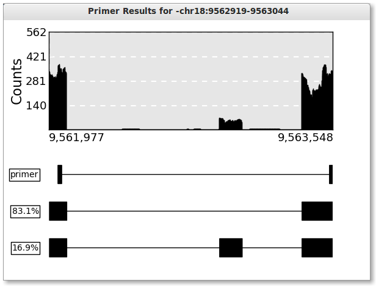

PrimerSeq aims to design qRT-PCR primers on appropriate flanking exons around your target of interest. Its aim is to design primers for validating alternative splicing events. PrimerSeq is particularly advantageous for designing a large number of primers for validating alternative splicing events found in RNA-Seq data.
PrimerSeq incorporates RNA-Seq data in the design process to weight exons by their read counts. Essentially, the RNA-Seq data allows primers to be placed where you want them to be. This could be for your particular cell line or experimental condition, rather than using annotations that incorporate transcripts that are not expressed for your data. Alternatively, you can design primers that are always on constitutive exons.
Contents: